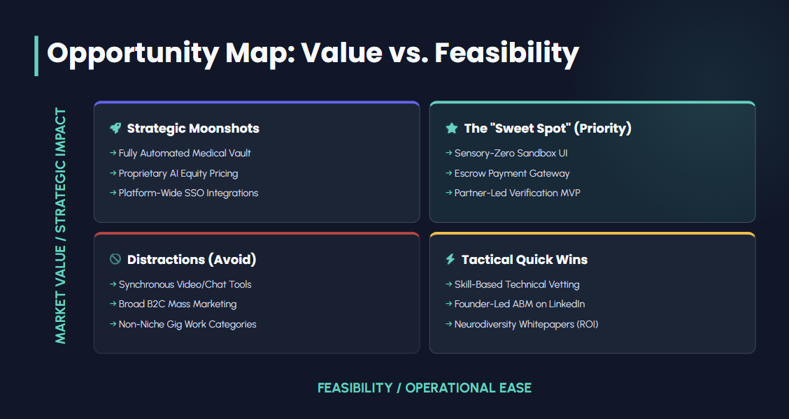

DeepDive: Asynchronous B2B Platform for Specialized STEM Talent
A 19-page B2B venture business plan, strategic opportunity map, and coded UI prototype addressing the structural disconnect between enterprise STEM skill shortages and underutilized neurodivergent analytical talent across the UK and DACH markets.
01 · Problem Framing & Market Research
Bridging Corporate STEM Bottlenecks and Untapped Cognitive Capital
The Enterprise Pain Point
- Persistent STEM Shortage: Innovation-driven organizations in IT, Pharma, and Engineering face acute bottlenecks for niche, time-critical sprints alongside high traditional consulting overhead.
- AI's "Jagged Frontier": Empirical Harvard Business School evidence shows generative AI excels at routine tasks but falters in novel, deeply analytical edge cases where lateral human thinking remains irreplaceable.
- Procurement & HR Friction: Conventional hiring pipelines rely on synchronous social signaling that inadvertently filters out high-performing atypical thinkers.
The High-Level Solution
- Asynchronous Execution Model: Replaces high-friction video meetings and synchronous chats with a structured, text-first project environment designed to protect deep analytical focus.
- Enterprise Workflow Compatibility: Designed to act as a practical bridge into Agile/Scrum environments rather than an isolated silo, translating asynchronous progress into standard enterprise reporting formats.
- Trust & Risk Mitigation: Combines upfront Escrow transaction security with privacy-by-design compliance principles suitable for risk-averse enterprise buyers.
02 · Lean Startup Prioritization
Opportunity Map: Value vs. Operational Feasibility
To avoid premature scaling and capital overextension, product and go-to-market initiatives were mapped across Strategic Impact versus Operational Feasibility. Launch execution focuses strictly on the high-value, high-feasibility Sweet Spot to validate B2B product-market fit before financing capital-intensive Phase 2 R&D.

03 · Competitive Benchmarking
Structural Differentiation in the Expert Marketplace
| Competitor Archetype | Business Model | Core Strength | Structural Gap Addressed by DeepDive |
|---|---|---|---|
| Generalist Gig Platforms e.g., Upwork, Fiverr |
High-volume B2C/SMB marketplace | Massive global liquidity & brand scale | Severe price competition, wage dumping, and unstructured synchronous client friction. |
| Expert Networks e.g., GLG, AlphaSights |
High-ticket corporate advisory calls | Curated enterprise-grade domain expertise | Relies almost exclusively on synchronous 1-on-1 voice/video calls, creating a barrier for text-first thinkers. |
| Specialized Consultancies e.g., Auticon |
Agency / direct employment consulting | Proven enterprise trust & neurodiversity focus | Headcount-bound agency economics rather than scalable software; consultants often remain embedded in synchronous client teams. |
04 · Analytical Depth (Redacted for IP Protection)
Components Covered in the Full 19-Page Business Plan
Strategy & GTM
- DIFA Model & SMART Commercial Objectives
- Account-Based Marketing (ABM) & R&D Budget Positioning
- Complete 7Ps Service Marketing Mix
- 9-Block Business Model Canvas
Compliance & Defensibility
- UK Private Limited Company (Ltd.) Structuring
- UK GDPR Article 9 Privacy-by-Design Architecture
- Institutional Partnership Trust Framework
- Escrow Risk-Mitigation Workflow
Financial Modeling
- Hybrid Value-Based Pricing Architecture
- 12-Month Cashflow & Break-Even Forecast
- Unit Economics & LTV:CAC Sensitivity
- Runway Stress-Testing & Bootstrapping Contingency
Explore the Coded UI Prototype
Inspect the live front-end concept demonstrating the low-stimulus visual hierarchy and asynchronous interaction flow.